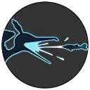
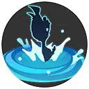
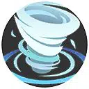
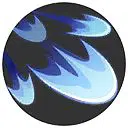
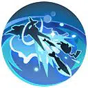

| Attaque | Icône | Description |
|---|---|---|
| Attaque de base |  |
Devient une attaque chargée tous les trois coups. Le troisième coup envoie un Embrochet ou un autre Pokémon sur la cible, lui infligeant des dégâts. |
| Talent | Icône | Description |
|---|---|---|
| Dégobage |  | Attrape une proie dans son bec après l’utilisation d’une Capacité. Lorsque Nigosier reçoit des dégâts, la renvoie comme une contre-attaque. Le type de proie et l’effet diffèrent selon les HP du lanceur. |
| Attaque spéciale 1 | ||
|---|---|---|
| Attaque | Icône | Description |
| Siphon |  |
Forme un syphon qui inflige des dégâts aux ennemis pris dedans. La zone rétrécit progressivement et inflige plus de dégâts. Avant sa disparition ralentit les ennemis. Nigosier peut également capturer une proie en passant dedans. |
| Attaque | Icône | Description |
|---|---|---|
| Niveau 6: Surf Amélioration au niveau 13 |
Envoie vague qui inflige des dégâts. Une fois arrivée à sa portée maximale, inflige de nouveau des dégâts et repousse les ennemis vers sa trajectoire initiale. Nigosier peut également attraper une proie en passant dedans. |
| Attaque | Icône | Description |
|---|---|---|
| Niveau 6: Plongée Amélioration au niveau 13 |
 | Forme une flaque permettant de plonger pour infliger des dégâts et faire reculer les ennemis. Peut également capturer une proie. Utilisable jusqu’à 3 fois. |
| Attaque spéciale 2 | ||
|---|---|---|
| Attaque | Icône | Description |
| Danse Plumes | Diminue l’Attaque et ralentit les ennemis. | |
| Attaque | Icône | Description |
|---|---|---|
| Niveau 4: Vent Violent Amélioration au niveau 11 |
 | Crée un vent féroce repoussant les ennemis et infligeant des dégâts lorsqu’ils retombent au sol. |
| Attaque | Icône | Description |
|---|---|---|
| Niveau 4: Lame d'Air Amélioration au niveau 11 |
 | Envoie des lames qui infligent des dégâts et permet de se replacer. Une touche réduit le temps de rechargement. |
| Capacité Unite | ||
|---|---|---|
| Attaque | Icône | Description |
| Tir de Barrage Débloquage au niveau 9 |
 | Forme une flaque depuis laquelle Nigosier attrape des proies pour ensuite les tirer sur ses ennemis. Le lanceur est immobile et ne peut pas utiliser d’autres Capacités pendant la durée de celle-ci. |